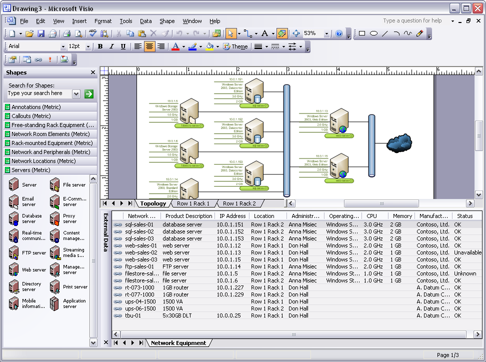

Microsoft Office Visio 12
09.12.05Итак, мои скриншоты Microsoft Office Visio 12 Beta 1.На этом пока все. Пока очень мало поработал в Visio 12. Рассказал о тех нововведениях, которые заметны сразу.
Начало установки
Ввод серийного ключа
Лицензионное соглашение
Выбор типа установки
Выбор компонентов
Непосредственно процесс установки
Завершение установки программы
Заставка запуска программы
Первый запуск программы
Выбор примеров чертежей
Visio 12 во всеоружии... :-)
Выбор заливки фигуры
Выбор цветовой темы.(новая возможность)
Выбор цветовой темы, увеличенные значки.
Custom properties или Другие свойства, перекочевали теперь в Shape Data(Данные фигуры). Теперь под них отведено соответствуещий пункт меню.(новая возможность)
Выбор типа отображения Shape Data(данные фигуры).(новая возможность)
Окно выбора местоположения данных фигуры.(новая возможность)
Непосредственно результат. Сразу скажу, что это простое преобразование фигуры в группу и добавления в неё этих самых данных. Т.е. в принципе простой дополнительный элемент группы.
"Центр доверия" :-)
Непосредственно окно этого самого доверия.
Окно "О программе"
Чертеж из примеров, входящих в комплект программы

Новое окно правописания
Новая кнопка, Автосоединение.
Суть работы проста, определяются близлежащие фигуры и у основной фигуры при выделении появляются маленькие синие стрелки, при нажатии на которые, происходит автоматическое соединение с близлежащей фигурой.(новая возможность)